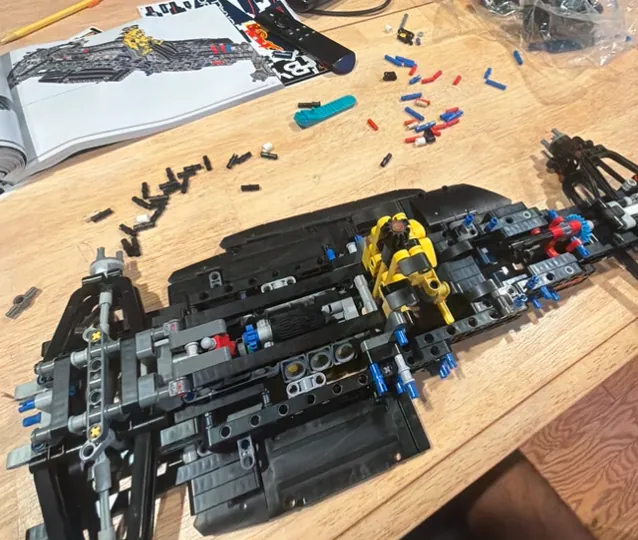

A little about me
Curiosity starts it.
Building teaches me.
I’m a mechanical engineering student at the University of Georgia, graduating in May 2028. I’m drawn to mechanisms, robotics, and the hands-on work of making a design function outside the CAD window.
Long term, I want to help build autonomous robots that can work in space. Right now, I’m learning through spacecraft hardware, student teams, and robotics research.
BS Mechanical EngineeringUniversity of Georgia · 3.60 GPA
Relevant coursework +
Dynamics, Strength of Materials, Statics, Thermodynamics, Differential Equations, Linear Algebra

Off the workbench?
LEGO, soccer, and somewhere new to explore.